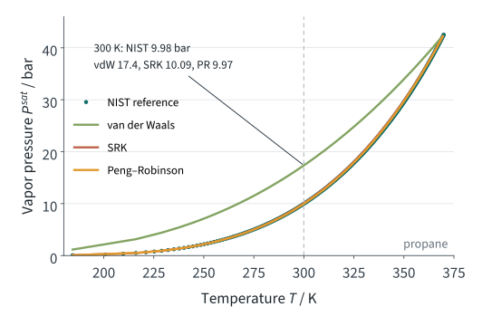
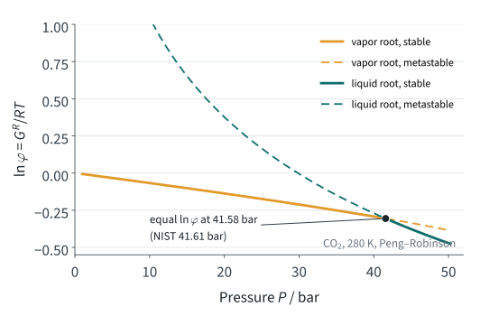
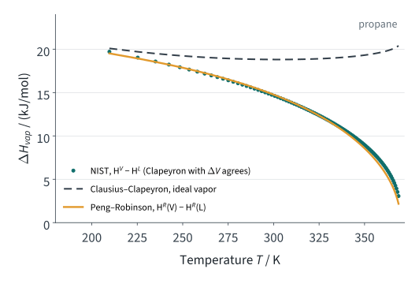
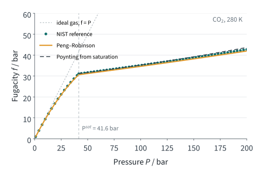
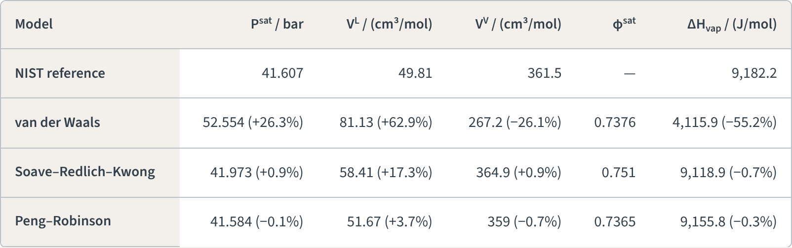

Session P4 of 7 · before the midterm · 180 minutes
Before the midterm · 7 sessions P1 · Framework P2 · PVT and equations of state P3 · Residual properties P4 · Pure-component equilibrium and fugacity P5 · Mixtures P6 · Excess properties and activity P7 · Choosing a property model
After the midterm · 7 sessions 1 · VLE and flash 2 · Experimental VLE and consistency 3 · Liquid stability and LLE 4 · Solids and adsorption 5 · Chemical equilibrium 6 · Electrochemical equilibrium 7 · Choosing a model from evidence
P1: at equilibrium μ is equal in every phase. P3: GR from an equation of state. Today the two meet: the fugacity, the vapor pressure of a pure fluid from equal fugacity, the Clapeyron equation, and the fugacity of a compressed liquid and of a solid. Session 1 after the midterm starts from these.

A propane tank sits at 300 K. Liquid and vapor coexist, so the pressure is the vapor pressure.
The reference gives 9.98 bar. Van der Waals gives 17.4 bar (+74%); SRK 10.09; Peng–Robinson 9.97.
Each equation finds its own vapor pressure from one condition: equal fugacity in the two phases.
By the end of today you can compute it, and say what a correct vapor pressure does not guarantee.
NIST Chemistry WebBook, SRD 69 (Lemmon, McLinden and Wagner propane equation). Lab P4.
Where you show it
0–30 Essential concepts fugacity, equal f, Clapeyron, Poynting
30–40 Activity 1 vapor and liquid fugacity by hand
40–60 Demo Lab P4
60–70 Break
70–140 Activity 2 · pair investigation vapor pressure, ΔvapH, liquids
140–180 Discussion and exit ticket answer the session question
Session question What decides when two phases of a pure fluid coexist, and how well do an equation of state and the classical approximations reproduce the vapor pressure, the enthalpy of vaporization and the liquid fugacity?
Before class · 20 min Read the Session P4 pre-class note and answer its three questions.
After class · 40 min Finish Lab P4: four fluids and three isotherms, then A–C in the Graduate view. Submit the study file with your name and ID.
Studying on your own? Follow the same order. Turn on narration or captions at the bottom left, and pause at each activity slide.
For an ideal gas at fixed T, dμ = RT d ln P. For any fluid, define f by
d\mu=RT\,d\ln f\quad(T\text{ fixed})
with f/P → 1 as P → 0. The fugacity coefficient φ = f/P:
\ln\varphi=\frac{G^R}{RT}=\int_0^P(Z-1)\frac{dP}{P}
f has units of pressure. For a pure fluid ln φ is the GR/RT of P3.
CO₂, 280 K, 30 bar (vapor)
| Source | φ | f / bar |
|---|---|---|
| NIST | 0.8194 | 24.58 |
| virial, Pitzer B | 0.8299 | 24.90 |
| Peng–Robinson | 0.8090 | 24.27 |
| ideal gas | 1 | 30 |
The real gas behaves, for equilibrium, as an ideal gas at 24.6 bar.

μL = μV at the same T and P is the same as
f^L=f^V\iff\ln\varphi^L=\ln\varphi^V
The phase with the lower ln φ is stable; the crossing is the vapor pressure.
CO₂, 280 K Peng–Robinson crosses at 41.58 bar; NIST 41.61. fsat = 31.1 bar in both phases.
Search between the spinodal pressures (6.6 and 50.4 bar). Outside them the cubic has one root, and ln φL = ln φV holds trivially.
Psat error against NIST / %
| Tr | vdW | SRK | PR | |
|---|---|---|---|---|
| methane | 0.6 | +218 | −2.3 | +0.7 |
| propane | 0.6 | +455 | −1.4 | +0.8 |
| propane | 0.9 | +31 | +1.4 | +0.5 |
| CO₂ | 0.9 | +35 | +0.8 | −0.3 |
| water | 0.6 | +1033 | −6.0 | −3.4 |
| water | 0.9 | +46 | +2.7 | +1.5 |
SRK and PR fitted m(ω) to vapor pressures, and ω itself is defined at Tr = 0.7. SRK is within 0.1% there for every fluid.
Van der Waals keeps a constant: its attraction does not grow as T falls, so the liquid is too unstable and Psat far too high.
A good Psat tests the fit. The liquid volume (P2) and ΔvapH (next slide) are independent tests.
Along the coexistence curve dμL = dμV, so
\frac{dP^{\text{sat}}}{dT}=\frac{\Delta_{\text{vap}}H}{T\,\Delta V}\quad\text{(exact)}
With VL ≪ VV = RT/P (ideal vapor), Clausius–Clapeyron:
\frac{d\ln P^{\text{sat}}}{dT}\approx\frac{\Delta_{\text{vap}}H}{RT^2}

Clausius–Clapeyron error for propane: +3% at Tr = 0.6, +16% at 0.75, +40% at 0.85, +122% at 0.95. Clapeyron with the NIST ΔV: within 0.01%.

\Big(\frac{\partial\ln f}{\partial P}\Big)_T=\frac{V}{RT}
f is continuous at Psat because μ is. Its slope drops from VV/RT to VL/RT.
CO₂, 280 K f = 31.1 bar at 41.6 bar, 35.1 bar at 100 bar, 42.7 bar at 200 bar.
Compressing the liquid fivefold raises its fugacity by 37%.
Integrate (∂ ln f/∂P)T = VL/RT from saturation:
f^L(P)=\varphi^{\text{sat}}P^{\text{sat}}\,\mathcal{P}
\mathcal{P}=\exp\int_{P^{\text{sat}}}^{P}\frac{V^L}{RT}dP
\mathcal{P}\approx\exp\frac{V^L(P-P^{\text{sat}})}{RT}
\mathcal{P} is the Poynting factor; Session 1 after the midterm writes it \mathcal{P}_i. For P − Psat = 1 bar at 300 K it is 1.0007 for water (18 cm³/mol) and 1.004 for a liquid of 100 cm³/mol.
Constant-VL Poynting against NIST
| Liquid | P / bar | factor | error |
|---|---|---|---|
| water, 500 K | 100 | 1.039 | +0.02% |
| water, 500 K | 200 | 1.095 | +0.08% |
| propane, 300 K | 100 | 1.384 | +0.8% |
| CO₂, 280 K | 100 | 1.133 | +0.4% |
| CO₂, 280 K | 200 | 1.403 | +2.3% |
Liquid CO₂ near its critical point is compressible, so a constant VL overestimates f.
Below the melting point Tm the stable phase is the solid. Neglecting ΔCp:
\ln\frac{f^{\text{s}}}{f^{\text{l}}}=-\frac{\Delta_{\text{fus}}H}{R}\Big(\frac{1}{T}-\frac{1}{T_m}\Big)
fl is the fugacity of the subcooled liquid, a metastable reference state. Session 4 after the midterm uses this for solubility and freezing.
Ice against supercooled water, ΔfusH = 6.01 kJ/mol
| T / K | fs/fl measured | equation | error |
|---|---|---|---|
| 268.15 | 0.9526 | 0.9519 | −0.08% |
| 263.15 | 0.9073 | 0.9043 | −0.3% |
| 253.15 | 0.8227 | 0.8113 | −1.4% |
| 243.15 | 0.7463 | 0.7214 | −3.3% |
Measured: ratio of the vapor pressures of ice and supercooled water (Murphy and Koop, 2005). The error grows with the neglected ΔCp.
Activity 1 · 10 minutes · alone, then with a partner
CO₂ at 280 K. (a) Vapor at 30 bar: with B = −144.7 cm³/mol, compute ln φ = BP/RT, φ and f. (b) Liquid at 100 bar: with Psat = 41.61 bar, φsat = 0.7479 and VL = 49.81 cm³/mol, compute the Poynting factor and fL. Compare with NIST: 24.58 bar and 35.12 bar.
Work in SI: B and VL in m³/mol, P in Pa, R = 8.314 J/(mol K).
On your own: pause here and write your answer. In place of a partner, compare it with the next slide and write one sentence on any difference and its cause.
φ = 0.830, f = 24.90 bar (NIST 24.58, +1.3%)
Poynting factor = 1.133
Liquid at 100 bar
fL = 0.7479 × 41.61 × 1.133 = 35.26 bar
NIST 35.12 bar: +0.4%.
Without the Poynting factor, fL = φsatPsat = 31.12 bar: −11%.
With φ = 1 as well, fL = Psat = 41.61 bar: +18%.

Lab P4 should report CO₂, 280 K: NIST 41.607 bar · PR 41.584 bar, VL 51.67 cm³/mol, φsat 0.7365, ΔvapH 9156 J/mol (NIST 9182) · vdW 52.55 bar
The trivial solution. Outside the spinodals a cubic has one root, so “ln φL = ln φV” holds for the same root. Bracket Psat between the spinodals and check ZL ≠ ZV.
φsat = 1 at high pressure. For CO₂ at 280 K φsat = 0.748. Setting it to 1 makes fsat 34% too high before any Poynting factor.
Clausius–Clapeyron near Tc. It assumes an ideal vapor and negligible VL. For propane at Tr = 0.95 it doubles ΔvapH. Use Clapeyron with ΔV.
Poynting with P in place of P − Psat. The exponent starts at saturation. A constant VL fails for a compressible liquid near Tc.
Next Activity 2: a pair investigation in Lab P4, 70 minutes.
Before you leave your seat, check that Lab P4 opens on your device and that the CO₂ case is saved.
Activity 2 · 70 minutes · in pairs: one drives Lab P4, one checks by hand, then swap
20 min · the vapor pressure Four fluids with three cubics at their starting temperatures, then Lab P4 A: the whole curve. Where is each equation worst?
15 min · ΔvapH Lab P4 B: Clapeyron, Clausius–Clapeyron and the PR residuals against NIST. At what Tr does Clausius–Clapeyron pass 10% error?
20 min · liquids and solids The fugacity view on the three isotherms, then Lab P4 C: Poynting and the ice/supercooled-water ratio.
15 min · explain Two sentences with numbers answering the session question. Download the study file with your names and IDs.
On your own: do both roles yourself: work in Lab P4, then check one Poynting factor by hand. Pause the slides while you work; the next slide lists what to hand in.
Graduate extension Lab P4 E: an equal-fugacity solver for propane written with an AI assistant, checked against the lab.
Check your results
| Starting state | NIST Psat | PR Psat | PR VL | PR ΔvapH |
|---|---|---|---|---|
| CO₂, 280 K | 41.61 | −0.1% | +3.7% | −0.3% |
| propane, 300 K | 9.977 | −0.0% | −3.8% | +0.7% |
| water, 500 K | 26.39 | +0.9% | +23.0% | +3.3% |
| methane, 150 K | 10.40 | +0.7% | −7.9% | +0.0% |
Clausius–Clapeyron passes 10% near Tr = 0.7 (propane) to 0.72 (CO₂, water).
Discuss in pairs, then with the class. On your own: write two or three sentences for each question.
Fugacity dμ = RT d ln f, f → P as P → 0. For a pure fluid ln φ = GR/RT. Two phases coexist when fL = fV.
Vapor pressure A cubic’s Psat is the crossing of ln φ of its two roots, between the spinodals. PR and SRK: within 1–6%; van der Waals: tens to hundreds of percent.
Condensed phases fL = φsatPsat × Poynting. A solid: fs/fl from ΔfusH. Clapeyron is exact; Clausius–Clapeyron only far from Tc.
Session question: coexistence requires equal fugacity. PR reproduces the vapor pressures to about 1% because it was fitted to them; ΔvapH to 1–5% and the liquid volume to 4–23% test it independently.
Next session P5: mixtures, partial molar properties and the fugacity of a component in a mixture.
Exit ticket and feedback · alone · 5 minutes · anonymous
At 280 K, CO₂ vapor and liquid coexist at 41.6 bar, and their molar volumes differ by a factor of seven. Name three quantities that are equal in the two phases, and give the fugacity at saturation if φsat = 0.748.
Scan the code or open the link. The same form asks three short questions about today: pace, confidence and whether the lab worked.
No name or student ID is recorded. Wait for “Response received.”
Hand in · this week Your Lab P4 study file with the four fluids, A–C, name and student ID. Upload it to myCourseVille, in the assignment for that lab.
Prepare · Session P5 Read the Session P5 pre-class note. About 20 minutes.
Optional · graduate Lab P4 E: an equal-fugacity solver written with an AI assistant, checked against the lab.
Open Lab P4 in the Graduate view →
Starts at 4. Investigate what the equal-fugacity condition can support. A: Test the vapor-pressure curves. B: Compare the routes. C: Test the condensed-phase forms.